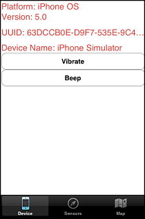
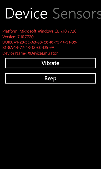
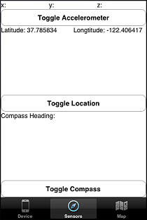

This simple example application demonstrates the use of HTML markup for creating multi-level native user interfaces. It also shows how to use other JavaScript modules (such as sensors) with the MoSync JavaScript NativeUI API.
|  |  |
| Main screen on iOS | Main screen on Windows Phone 7 |
|  | |
| Sensors screen on iOS | Sensors screen on Windows Phone 7 |
This example runs on all platforms supported by both the MoSync Wormhole JavaScript Library and NFC C++ Library (see Feature/Platform Support). It requires a device with NFC capabilities.
This example is included in the MoSync SDK installation in the /examples folder. For information on importing the examples into your workspace, see Importing the Examples.
When started, this example application on Android and iOS displays three tabs:
On Windows Phone 7 the tabs are translated into pivots.
The following technologies are used in this application:
main.cpp is the main C/C++ application file. You do not need to modify this file: you can just use the JavaScript interface. All of the HTML5 and JavaScript-related files and libraries are located in the /LocalFiles directory, are included in the application when it is built in the MoSync IDE. Inside that folder you can see the following files:
The /Resources.lst file has a default entry for the bundled files that should not be removed unless the user wants to remove all the HTML5 functionality.